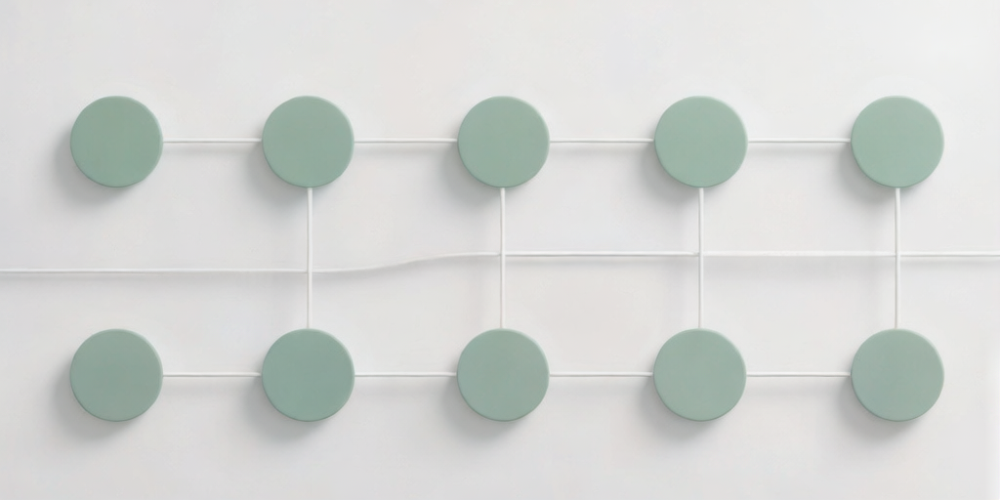
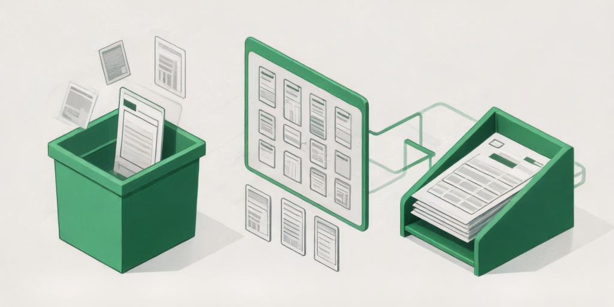

前段时间整理了一套知识管理工作流，今天分享给大家。
每天我们接触大量信息：公众号文章、播客、会议记录……但真正被内化的少之又少。
问题不在于你不努力，而在于没有一套顺手的工具组合。
信息≠知识。只有经过整理、关联和输出，才能变成真正属于你的东西。
收集——用龙虾抓取一切
不需要手动整理，随手发，AI帮你跑。
在飞书转发文章给 OpenClaw，它自动帮你解析内容、提炼要点，存进 Obsidian。
整理——在 Obsidian 中沉淀
OB 的双链笔记让知识之间产生关联。配合 Claudian 插件，可以直接在 OB 里和 AI 对话，深挖任何一个概念。
输出——用 Claude Code 写作
OB 知识库作为上下文，CC 负责写作加速。一篇文章从思路到成稿，1小时搞定。

给龙虾发这段话，让它帮你装好：
💡 Q: 飞书机器人没有回复怎么办？检查龙虾是否正常运行，在 Dashboard 发"你好"测试一下。
⚠️ 注意：API Key 不要直接发到群里，有泄露风险！
折腾完这一套之后，我的工作效率大概提升了 3 倍。如果你也在用类似的工具组合，欢迎评论区交流 👇
如果这篇文章对你有帮助，欢迎点赞👍 在看📖 转发🔁
遇到问题评论区聊聊 👇